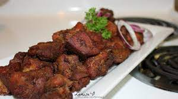

Haitian recipes : Haitian Griot
Description
Often considered the national dish of Haiti, Griot is made of pieces of pork shoulder that are marinated, cooked, and then fried until crispy brown. Serve this dish with Pikliz and fried plantains for a true taste of Haiti!
Ingredients
- 450g of pork fillet, or shoulder, cut into cubes
- 1/2 lemon, juiced
- 1 onion, finely chopped
- 2 spring onions, sliced
- 1 pepper, finely chopped
- 3 garlic cloves, crushed
- 4 cloves
- 1 orange, juiced
- 1 lime, juiced
- 10ml of white vinegar
- 4 sprigs of fresh thyme
- 10g of parsley, finely chopped
- 1 stick of celery, finely chopped
- 1/2 Scotch bonnet chilli, finely chopped
- 1/2 tsp salt
- 1 tsp freshly ground black pepper
- 1l chicken stock
- vegetable oil, for deep-frying
Steps
- Place the pork in a bowl of water with the lemon juice, then add to a large saucepan with the rest of the ingredients for the griot (apart from the vegetable oil). Stir well to combine, then place over a medium heat, bring to a simmer and cook for 25-30 minutes
- Use a slotted spoon to remove the pork from the pot and drain the meat on kitchen paper, removing any pieces of onion or thyme that may have stuck to the meat
- Heat a deep pan of oil or a deep-fat fryer to 180°C
- In small batches, lower the cooked pork into the oil and deep-fry until crisp and golden. Serve with the pikliz on the side